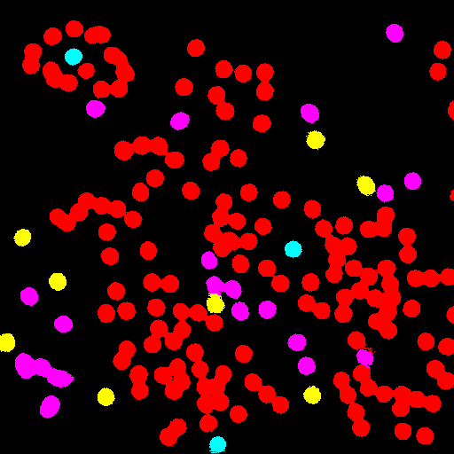
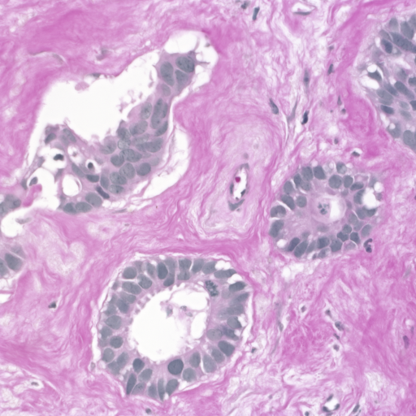
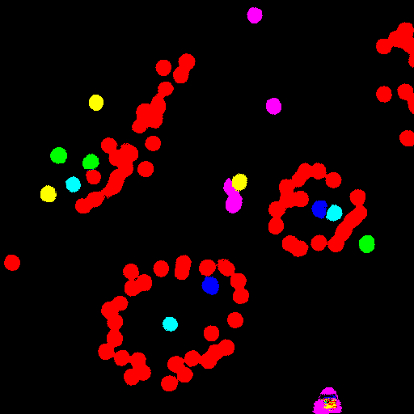

TensorFlow-FlexUNet-Image-Segmentation-BreCaHAD (2025/08/13)
This is the first experiment of Image Segmentation for BreCaHAD Multiclass based on our
TensorFlowFlexUNet (TensorFlow Flexible UNet Image Segmentation Model for Multiclass)
and a 512x512 pixels
Augmented-BreCaHAD-PNG-ImageMask-Dataset.zip with colorized masks
(mitosis:blue, apoptosis:green, tumor:red, non-tumor:violet, lumen:cyan, non_lumen:yellow)
which was derived by us from
https://figshare.com/articles/dataset/BreCaHAD_A_Dataset_for_Breast_Cancer_Histopathological_Annotation_and_Diagnosis/7379186
Please note that the masks for the cells in our BreCAHAD Segmentation dataset were automatically
and artificially generated by drawing fixed-radius colored circles around
the center points specified in the annotation JSON files of the original BreCAHAD dataset.
The derivation of our augmented dataset, please refer to our repository
Tiled-ImageMask-Dataset-BreCaHAD" for
BreCaHAD Singleclass Tumor.
Acutual Image Segmentation for 512x512 BreCaHAD images
As shown below, the inferred masks predicted by our segmentation model trained on the
PNG dataset appear similar to the ground truth masks.
rgb_map = (mitosis:blue, apoptosis:green, tumor:red, non-tumor:violet, lumen:cyan, non_lumen:yellow)
| Input: image |
Mask (ground_truth) |
Prediction: inferred_mask |
|
|
|
|
|
|
|
|
 |
1. Dataset Citation
The dataset used here has been taken from the following figshare web site.
BreCaHAD: A Dataset for Breast Cancer Histopathological Annotation and Diagnosis
Aksac, Alper; Demetrick, Douglas J.; Özyer, Tansel; Alhajj, Reda (2019).
BreCaHAD: A Dataset for Breast Cancer Histopathological Annotation and Diagnosis.
figshare. Dataset. https://doi.org/10.6084/m9.figshare.7379186.v3
DOI:https://doi.org/10.6084/m9.figshare.7379186.v3
Version 3
Dataset posted on 2019-01-28, 23:22
authored by Alper Aksac, Douglas J. Demetrick, Tansel Özyer, Reda Alhajj
License: CC BY 4.0
If you would like to train this BreCaHAD Segmentation model by yourself,
please download the dataset from the google drive
Augmented-BreCaHAD-PNG-ImageMask-Dataset.zip.
, expand the downloaded ImageMaskDataset and put it under ./dataset folder to be
└─BreCaHAD
├─test
│ ├─images
│ └─masks
├─train
│ ├─images
│ └─masks
└─valid
├─images
└─masks
BreCaHAD Statistics

As shown above, the number of images of train and valid datasets is not so large to use for a training set of our segmentation model.
Train_images_sample

Train_masks_sample
3 Train TensorFlowFlexUNet Model
We trained BreCaHAD TensorFlowFlexUNet Model by using the following
train_eval_infer.config file.
Please move to ./projects/TensorFlowFlexUNet/BreCaHAD and run the following bat file.
>1.train.bat
, which simply runs the following command.
>python ../../../src/TensorFlowFlexUNetTrainer.py ./train_eval_infer.config
Model parameters
Defined a small base_filters = 16 and large base_kernels = (9,9) for the first Conv Layer of Encoder Block of
TensorFlowFlexUNet.py
and a large num_layers (including a bridge between Encoder and Decoder Blocks).
[model]
;You may specify your own UNet class derived from our TensorFlowFlexModel
model = "TensorFlowFlexUNet"
generator = False
image_width = 512
image_height = 512
image_channels = 3
num_classes = 7
base_filters = 16
base_kernels = (9,9)
num_layers = 8
dropout_rate = 0.05
dilation = (1,1)
Learning rate
Defined a very small learning rate.
[model]
learning_rate = 0.00007
Loss and metrics functions
Specified "categorical_crossentropy" and "dice_coef_multiclass".
[model]
loss = "categorical_crossentropy"
metrics = ["dice_coef_multiclass"]
Dataset class
Specifed ImageCategorizedMaskDataset class.
[dataset]
class_name = "ImageCategorizedMaskDataset"
Learning rate reducer callback
Enabled learing_rate_reducer callback, and a small reducer_patience.
[train]
learning_rate_reducer = True
reducer_factor = 0.5
reducer_patience = 4
Early stopping callback
Enabled early stopping callback with patience parameter.
[train]
patience = 10
RGB Color map
rgb color map dict for BreCaHAD 1+4 classes.
[mask]
mask_file_format = ".png"
; 1+6 classes
; RGB colors mitosis:blue, apoptosis:green,tumor: red, non-tumor:violet,lumen:cyan non_lumen;yellow
rgb_map ={(0,0,0):0,(0,0,255):1,(0, 255,0):2 ,(255,0,0):3, (255,0,255):4, (0,255,255):5,(255,255,0):6 }
Epoch change inference callback
Enabled epoch_change_infer callback.
[train]
epoch_change_infer = True
epoch_change_infer_dir = "./epoch_change_infer"
num_infer_images = 6
By using this callback, on every epoch_change, the inference procedure can be called
for 6 images in mini_test folder. This will help you confirm how the predicted mask changes
at each epoch during your training process.
Epoch_change_inference output at starting (epoch 1,2,3)
Epoch_change_inference output at middlepoint (epoch 21,22,23)
Epoch_change_inference output at ending (epoch 44,45,46)
In this experiment, the training process was stopped at epoch 46 by EarlyStopping callback.
train_metrics.csv
train_losses.csv
4 Evaluation
Please move to ./projects/TensorFlowFlexUNet/BreCaHAD folder,
and run the following bat file to evaluate TensorFlowFlexUNet model for BreCaHAD.
./2.evaluate.bat
This bat file simply runs the following command.
python ../../../src/TensorFlowFlexUNetEvaluator.py ./train_eval_infer_aug.config
Evaluation console output:
evaluation.csv
The loss (categorical_crossentropy) to this BreCaHAD/test was not so low and dice_coef_multiclass
high as shown below.
categorical_crossentropy,0.1322
dice_coef_multiclass,0.9322
5 Inference
Please move ./projects/TensorFlowFlexUNet/BreCaHAD folder
,and run the following bat file to infer segmentation regions for images by the Trained-TensorFlowFlexUNet model for BreCaHAD.
./3.infer.bat
This simply runs the following command.
python ../../../src/TensorFlowFlexUNetInferencer.py ./train_eval_infer_aug.config
mini_test_images
mini_test_mask(ground_truth)
Inferred test masks
Enlarged images and masks of 512x512 pixels
rgb_map = (mitosis:blue, apoptosis:green, tumor:red, non-tumor:violet, lumen:cyan, non_lumen:yellow)
| Image |
Mask (ground_truth) |
Inferred-mask |
|
|
|
|  |
|
 |
|
|
|
|
|
|
|
|
 |
|
|
|
References
1. BreCaHAD: A Dataset for Breast Cancer Histopathological Annotation and Diagnosis
Aksac, Alper; Demetrick, Douglas J.; Özyer, Tansel; Alhajj, Reda (2019).
BreCaHAD: A Dataset for Breast Cancer Histopathological Annotation and Diagnosis.
figshare. Dataset. https://doi.org/10.6084/m9.figshare.7379186.v3
https://figshare.com/articles/dataset/BreCaHAD_A_Dataset_for_Breast_Cancer_Histopathological_Annotation_and_Diagnosis/7379186
2. BreCaHAD: a dataset for breast cancer histopathological annotation and diagnosis
Alper Aksac1, Douglas J. Demetrick, Tansel Ozyer and Reda Alhajj
https://bmcresnotes.biomedcentral.com/counter/pdf/10.1186/s13104-019-4121-7.pdf
3. Tiled-ImageMask-Dataset-BreCaHAD
Toshiyuki Arai @antillia.com
https://github.com/sarah-antillia/Tiled-ImageMask-Dataset-BreCaHAD
4. Tensorflow-Tiled-Image-Segmentation-BreCaHAD
Toshiyuki Arai @antillia.com
https://github.com/sarah-antillia/Tensorflow-Tiled-Image-Segmentation-BreCaHAD